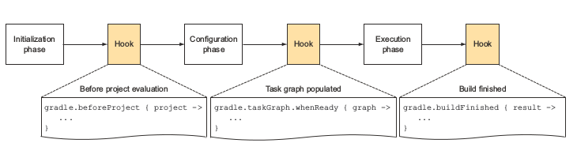
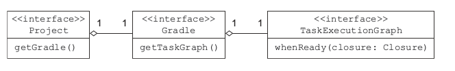

掌握构建生命周期
作为一个构建脚本的开发者，你不应该局限于编写任务动作或者配置逻辑，有时候你想在指定的生命周期事件发生的时候执行一段代码。生命周期事件可以在指定的生命周期之前、之中或者之后发生，在执行阶段之后发生的生命周期事件就该是构建的完成了。
假设你希望在构建失败时能够在开发阶段尽早得到反馈，给构建生命周期事件添加回调有两种方法：一是通过闭包，二是实现 Gradle API 的一个监听接口，Gradle并没有要求你监听生命周期事件，这完全决定于你，通过监听器实现的优势就是可以给你的类写单元测试，看看下面这幅图会有一点直观的印象：

在配置阶段，Gradle决定在任务在执行阶段的执行顺序，依赖关系的内部结构是通过直接的无环图(DAG)来表示的，图中的每一个任务称为一个节点，每一个节点通过边来连接，你很有可能通过dependsOn或者隐式的依赖推导来创建依赖关系。记住DAG图从来不会有环，就是说一个已经执行的任务不会再次执行，下面这幅图将要的展示了这个过程：

回想一下之前我们实现的makeReleaseVersion任务是在release任务之前执行的，我们可以编写一个生命周期回调方法来取代之前写一个任务来执行版本修改任务。构建系统准确知道在执行之前应该运行哪些任务，你可以查询任务图来查看它是否存在，下面这幅图展示了访问任务执行图的相关接口：

接下来我们来添加相应的监听方法，下面这段代码通过调用whenReady方法来注册回调接口，当任务图创建的时候这个回调会自动执行，你知道这个逻辑会在任何任务之前执行，所以你可以移除makeReleaseVersion任务。
gradle.taskGraph.whenReady { TaskExecutionGraph taskGraph ->
//检查任务图是否包括release任务
if(taskGraph.hasTask(release)) {
if(!version.release) {
version.release = true
ant.propertyfile(file: versionFile) {
entry(key: 'release', type: 'string', operation: '=',
value: 'true')
}
}
}
}
你也可以实现一个监听器来实现同样的效果，首先在构建脚本中编写一个实现指定监听器的类，然后在构建中注册这个实现，监听任务执行图的接口是TaskExecutionGraphListener，编写的时候你只需要实现graphPopulate(TaskExecutionGraph)方法，下图表示了这个过程：

下面是编程实现：
class ReleaseVersionListener implements TaskExecutionGraphListener {
final static String releaseTaskPath = ':release'
@Override
void graphPopulated(TaskExecutionGraph taskGraph) {
//查看是否包含release任务
if(taskGraph.hasTask(releaseTaskPath)) {
List<Task> allTasks = taskGraph.allTasks
//查找release任务
Task releaseTask = allTasks.find {it.path == releaseTaskPath }
Project project = releaseTask.project
if(!project.version.release) {
project.version.release = true
project.ant.propertyfile(file: project.versionFile) {
entry(key: 'release', type: 'string', operation: '=',
value: 'true')
}
}
}
}
}
def releaseVersionListener = new ReleaseVersionListener()
//注册监听器
gradle.taskGraph.addTaskExecutionGraphListener(releaseVersionListener)